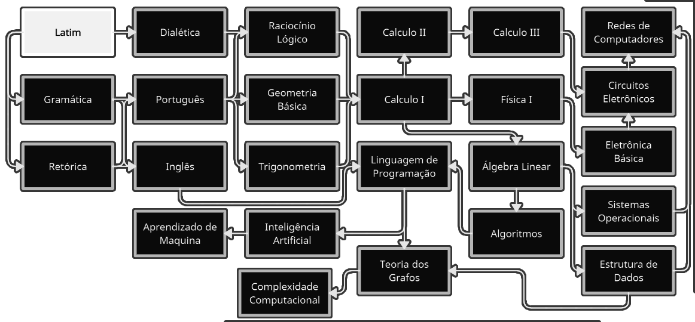

Meu caminho para as Ciências da Computação
Para o início de minha jornada irei focar em, matemática básica e latim, a fim de criar uma base sólida para as dêmias matérias.
Por quê, latim?
Napoleão Mendes de Almeida foi um gramático, filólogo e professor brasileiro, em seu livro "Gramática Latina", conta o espanto de 3 matemáticos com a educação brasileira a respeito da matemática, ao ponto de escreverem uma carta ao ministro da educação sobre tal situação que os estudantes encontravam-se, não sendo, pois tão distante da atual.
"Chegados ao Brasil, ficam os admirados com o cabedal de fórmulas decoradas de matemática com que os estudantes brasileiros deixam o curso secundário, fórmulas que na Itália são ensinadas só no segundo ano de faculdade; ficamos, porém, chocados com a pobreza de raciocínio, com a falta de ilação dos estudantes brasileiros; pedimos a vossa excelência que na reforma que se projeta se dê menos matemática e MAIS LATIM no curso secundário, para que possamos ensinar matemática no curso superior" (Almeida, Napoleão M. de, Gramática Latina).
O estudo do latim no Brasil era obrigatório, tendo em vista que qualquer escola ocidental que se presasse tinha latim como matéria fundamental em sua grade, entretanto deixou de ser obrigatória em 1961 pela Lei de Diretrizes e Bases da Educação Nacional, tornando o latim facultativo.
Trivium
Dialética, retórica e gramática, são 3 das 7 disciplinas da educação clássica, chamada de "Artes Liberais", essa três disciplinas juntas são denominadas "Trivium". A dialética é o estudo do raciocínio lógico e critico; A retórica é o estudo da persuasão, da comunicação eficaz; A gramática é o estudo da estrutura da linguagem.
O Português e o inglês
Por ter dificuldade em português vou estudá-lo da forma correta e assim serve para o inglês, de modo a consegui ler e entender o que estudo da forma correta.
Matemática
Voltarei a estudar a matemática desde a Aritmética à Álgebra Linear, Calculo III e Física I, criando uma base solida para as matérias posteriores.
Ciências da Computação
Após ter estudado todo o conteúdo anterior, estou preparado para estudar verdadeiramente computação.